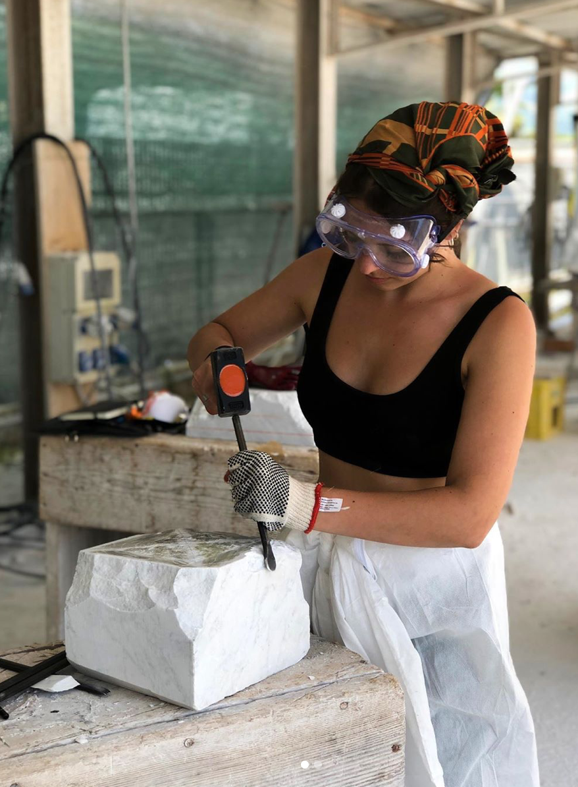

About the Artist
Michela Roman is an emerging artist based out of Richmond Hill Ontario, Canada. She received a Bachelor Specialization of Fine Arts, Minor in History at Nipissing University. Second Prize Winner for the President’s Selection Committee Graduating Art Contest. Engaged in the study of human anatomy and the natural world, her art practice builds upon traditional figural sculpture by transforming the human body into a metaphor for life’s passions, histories and tribulations.
View CV